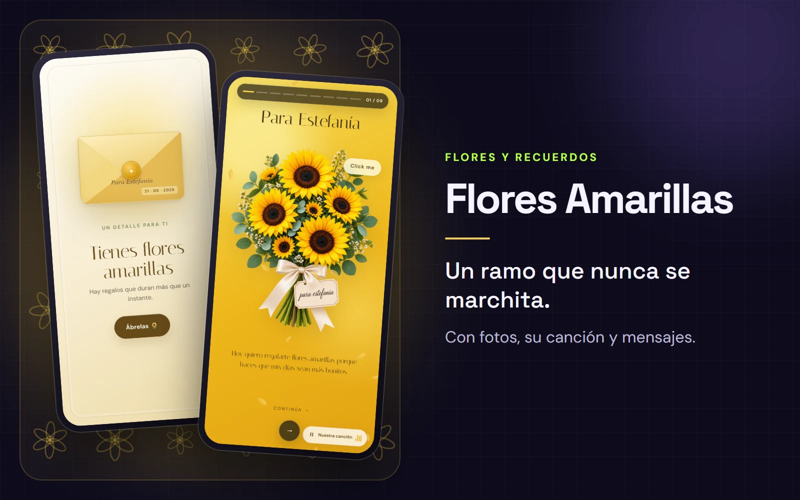
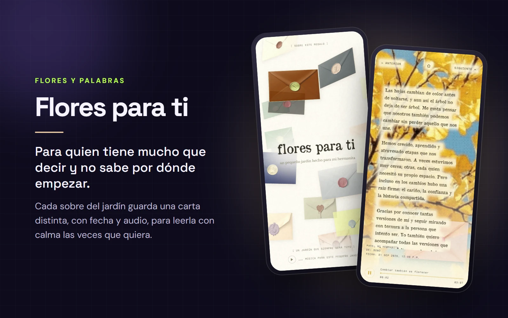
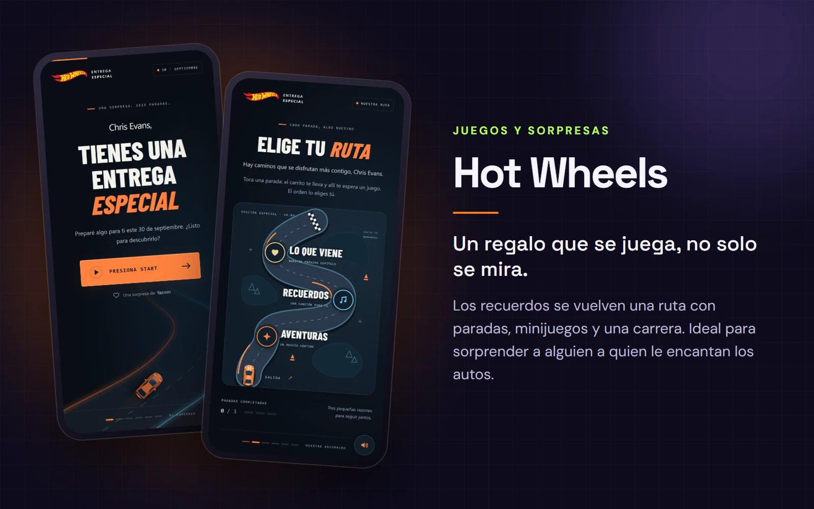
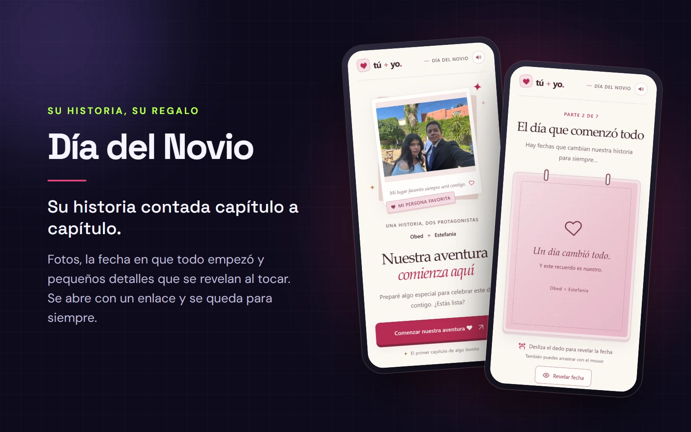

Flores Amarillas

PARA ALGUIEN ESPECIAL
Hay regalos que se abren con un enlace y se quedan en la memoria. Flores, juegos, música y recuerdos para sorprender a tu manera.
Explorar experienciasDETALLES QUE SE RECUERDAN
Elige una experiencia, descubre sus detalles e imagina cómo se vería con su historia.




HECHA A TU MEDIDA
Cuéntanos a quién quieres sorprender y lo creamos contigo.
Crear mi experiencia